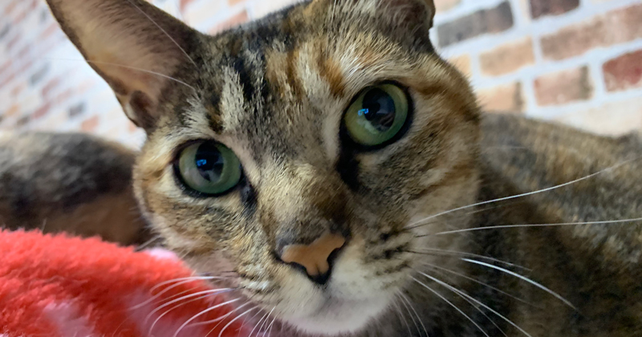
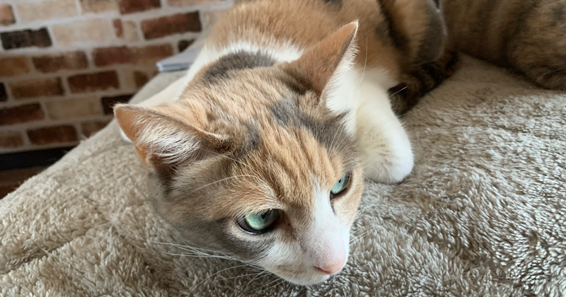
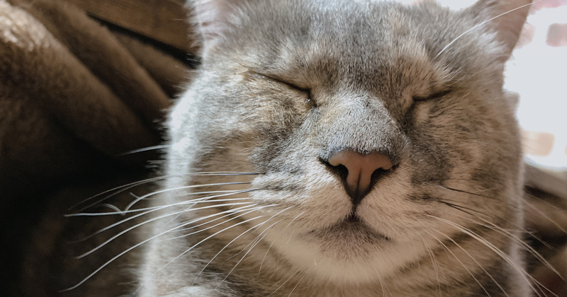

愛犬・愛猫の飼い主
として持つべき思考

現代、多くの方が愛犬・愛猫と生活をしています。
その中で飼い主さまの思考によって愛犬・愛猫は様々な環境で生活しております。
大事に室内で飼われていたり、中には番犬として外飼いだったり。
今回は愛犬・愛猫を大事に健康に過ごさせたい！といった思考の飼い主さまに向けた内容でお話していきます★
愛犬・愛猫のために
飼い主ができること

飼い主は愛犬・愛猫のために何をしてあげれるのでしょうか？
ご飯のことを考えてあげる？運動のことを考えてあげる？ストレスのない環境を用意してあげる？
この中での正解は全部です★
愛犬・愛猫のためにしてあげれることは今あげた３つ以外にもたくさんあります。
まずは愛犬・愛猫のためにご飯のことを考えてあげることも大事にはなりますが、
考えるべきことはそれだけではないということを認識しておくのが大事になります。
愛犬・愛猫を病気にさせない
飼い主になるには？

愛犬・愛猫は様々な原因によって体調不良や病気を引き起こします。
様々な病気に関しての知識が備わっているの越したことはないですが、そこは難しいと思います。
そうなのであれば愛犬・愛猫を日々観察してあげてください。触れ合ってください★
ただ観察する、ただ触れ合うのではなく、愛犬・愛猫の状態を探るために接してあげてください。
ウエストの変化だったり、いつもと違う状態に早期発見・早期対応できるようにしてあげてください★
原因追求できる飼い主になろう